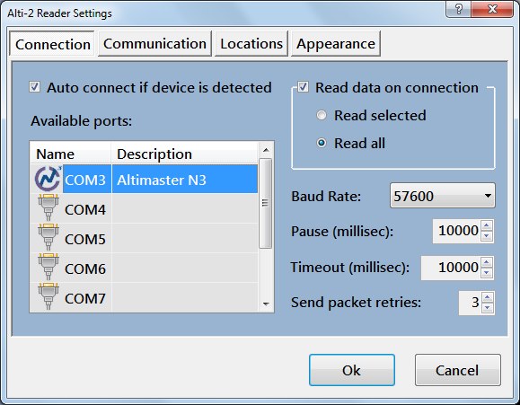

If You use N3 or N3Audio device it will be automatically detected and shown in available ports list.
If Auto connect is set connection will be established automatically.
If Read data on connection is set device data will read automatically after connection is established.
If You device is not detected or You have problems to read data from it try to change connection parameters shown here.
I have no problems with this settings when test program with my N3.
Created with the Personal Edition of HelpNDoc: Free iPhone documentation generator